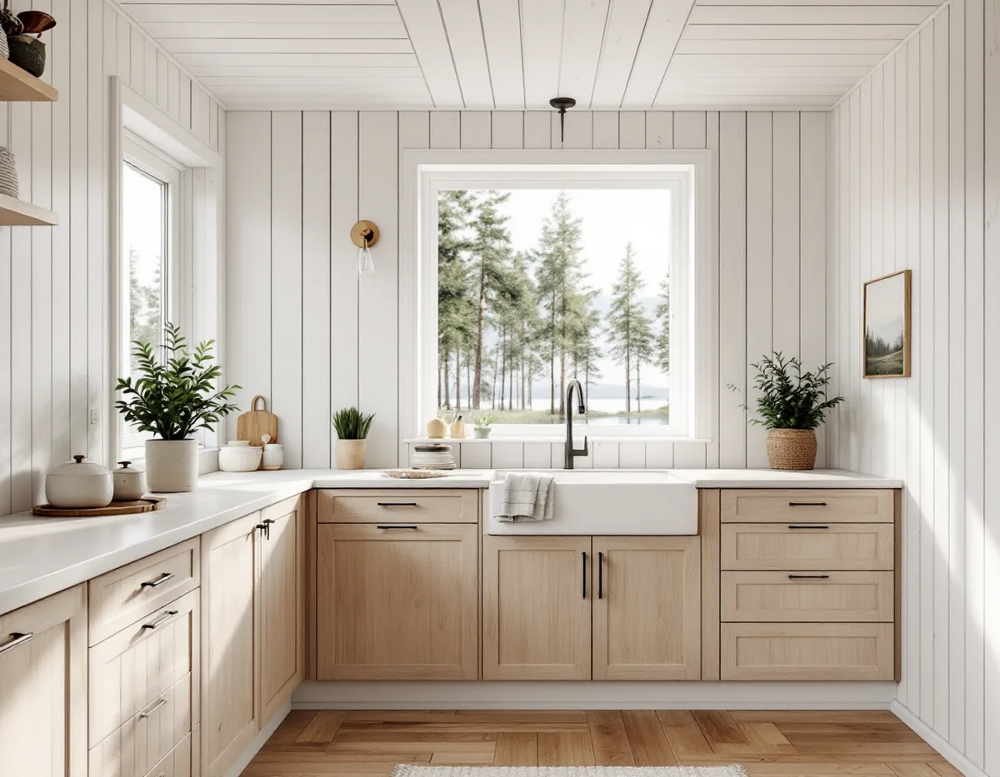
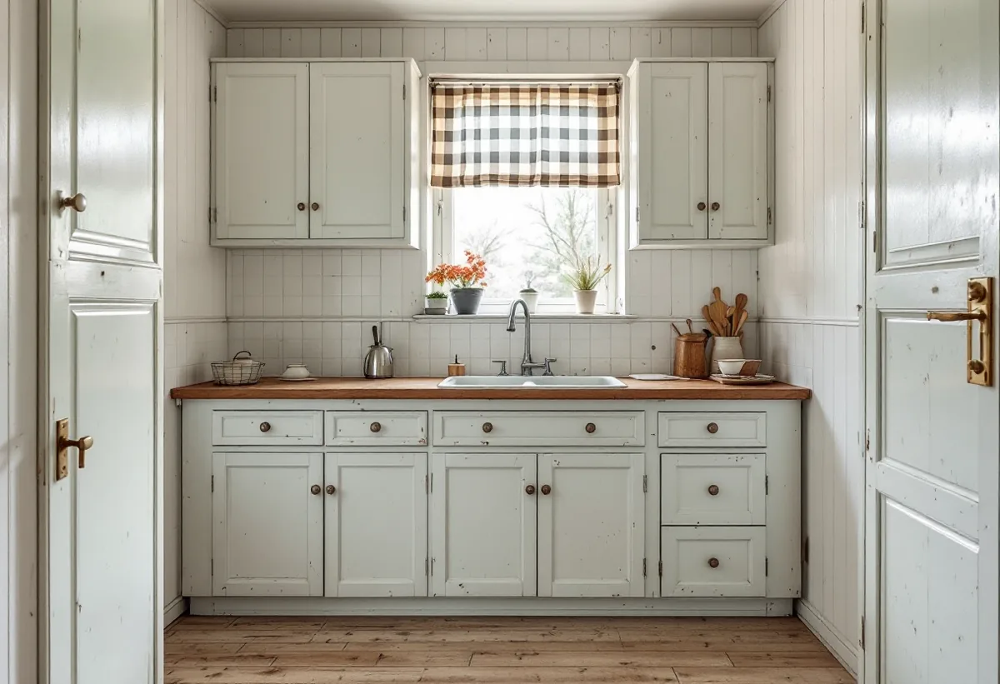
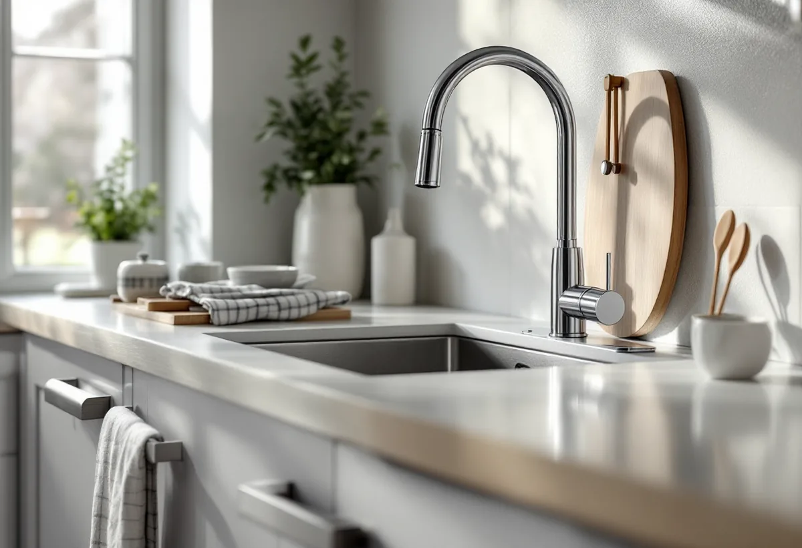

Platsbesök
Gratis besök där vi ser hur vatten, avlopp och ventilation är ordnade.

I Österåker blir allt fler fritidshus helårsbostäder, och då är köket ofta det första som behöver göras om.
Beskriv jobbet kort.
Något blev fel. Kontrollera uppgifterna eller ring 08 12 410 276.
Vi tittar på jobbet på plats innan du får offert.
Du ser vad som ingår och vad det kostar.
Vi drar av ROT direkt och sköter ansökan.
Geal Entreprenad AB, Bromma. Org.nr 559303-7566.

Med egen brunn och eget avlopp spelar vatten och avlopp större roll än i stan. Geal Entreprenad AB planerar köket efter husets förutsättningar och bygger det färdigt.
Österåkers kommun beskriver sig som en kommun som växer snabbt, där flera områden utanför tätorten utvecklas från fritidshus till mer permanent boende. I vissa av dem finns ännu inget kommunalt vatten och avlopp, och de boende har eget avlopp och egen brunn. Kommunalt vatten och avlopp sköts av Roslagsvatten.
Ett kök i ett fritidshus är ofta byggt för korta perioder: liten diskbänk, ingen diskmaskin och en enkel fläkt. När huset ska användas året runt behöver köket klara mer vatten, mer värme och mer matlagning. Vi börjar med att ta reda på hur huset får sitt vatten och vart avloppet går. I ett äldre fritidshus behöver vi också se efter hur elen är dragen, om golvet bär en tyngre köksö och om väggarna är isolerade för vinterbruk. Ett nytt kök i ett oisolerat hörn kan få kalla ytor och fukt bakom skåpen.

Kommunen skriver att vi i Sverige i snitt använder 140 liter vatten per person och dag, varav ungefär tio liter till mat och dryck. Resten går bland annat till disk, dusch och toalett. Med egen brunn kan det bli problem när grundvattennivåerna sjunker, och kommunen ger råd som att fylla diskmaskinen innan den körs och att inte diska under rinnande vatten. Snålspolande kranar är ett annat av kommunens råd.
För ett kök betyder det att vi väljer blandare och diskmaskin med låg vattenförbrukning när huset har egen brunn. Har huset eget avlopp är det miljö- och hälsoskyddsavdelningen som svarar på frågor om anläggningen, och det är bra att veta om den är byggd för permanentboende innan köket får fler vattenförbrukare.
Kommunens lista över anmälningspliktiga åtgärder är tydlig. Anmälan krävs bland annat vid installation eller väsentlig ändring av vattenförsörjning eller avlopp i en byggnad, vid ändring av bärande väggar och balkar, vid nya eller förändrade rördragningar inne i bjälklag, vid ny eller ändrad ventilation och vid installation av en kamin eller eldstad.
Ett kök som flyttas eller får en ny diskplats med rör genom bjälklaget hamnar alltså på listan. Till anmälan vill kommunen ha relevanta handlingar – till exempel VA-situationsplan, planritning, VVS-ritning eller konstruktionsritningar – och ett förslag till kontrollplan, som behövs för alla anmälningar. Arbetet får börja först när startbeskedet har kommit.
Från den 1 juli 2025 gäller Boverkets nya byggregler. Kommunen har lagt ut mallar för en enkel kontrollplan både för de nya reglerna och för de äldre reglerna BBR och EKS, eftersom det under en övergångsperiod fram till den 1 juli 2026 gick att välja. Vi tar fram kontrollplanen efter de regler som gäller för ditt ärende.
El och VVS utförs av behöriga installatörer. Om köket ska få en vedspis eller om en kamin ska stå i samma rum krävs en egen anmälan. Funderar du på att bygga ut huset samtidigt beskriver vi det under tillbyggnad i Österåker, och mer om kök i allmänhet finns under köksrenovering.
Gratis besök där vi ser hur vatten, avlopp och ventilation är ordnade.
Kök med vattensnåla val om huset har egen brunn.
Anmälan med handlingar och kontrollplan där det krävs.
Det gamla köket rivs och underlaget kontrolleras.
El och VVS via behöriga installatörer, montering av köket.
Genomgång av köket och dokumentation.
I ett småhus ger köksrenoveringen rotavdrag på arbetskostnaden, till exempel för att montera fast inredning och installera vitvaror när köket byggs om. Material ger inget avdrag, och reparation av diskmaskin räknas enligt Skatteverket till rut. Geal drar avdraget direkt på fakturan.
Om köket flyttas, rördragning genom bjälklag, ventilation, el till spis och ugn i ett äldre hus, inredning och vitvaror samt transport till skärgård eller landsbygd. Efter ett gratis platsbesök får du ett skriftligt kostnadsförslag.
Planering, el, VVS, fläkt och väggar.
Köksrenovering i Stockholm →Takbyte, takbesiktning och plåtarbeten.
Takläggare i Österåker →Svinninge, sommarvillor och sportstugor.
Takrenovering i Österåker →Uthyrning, kulturmiljö och fornlämningar.
Attefallshus i Österåker →VA-utbyggnad, öar och vattensmarta val.
Badrumsrenovering i Österåker →Rivning, markarbete och gatukostnader.
Byggföretag i Österåker →Sommarvillornas fasadkulörer.
Fasadmålning i Österåker →Skärgårdshus, fritidshus och villor i Österåker.
Fasadrenovering i Österåker →Varsamhet, kulturvärden och kustlägen i Österåker.
Fönsterbyte i Österåker →Sommarvillorna i Svinninge.
Fönsterrenovering i Österåker →Jämna golv och färre trösklar.
Golvläggare i Österåker →Golv i sommarhus som blivit bostad.
Golvslipning i Österåker →Sommarvillor, röda stugor och efterkrigsvillor.
Målare i Österåker →Plåtdetaljer på sommarvillorna.
Plåtslagare i Österåker →Bryggor, altaner och äldre snickerier.
Snickare i Österåker →Lertegel, lovfrågan och återbruk av pannor.
Takbyte i Österåker →Sommarvillan blir åretruntbostad.
Tapetsering i Österåker →Grannmedgivande, strandskydd och utstakning.
Tillbyggnad i Österåker →Fritidshuset, värmen och anmälan.
Totalrenovering i Österåker →Eller ring 08 12 410 276, mån–fre 08–17.
Beskriv jobbet kort.
Något blev fel. Kontrollera uppgifterna eller ring 08 12 410 276.